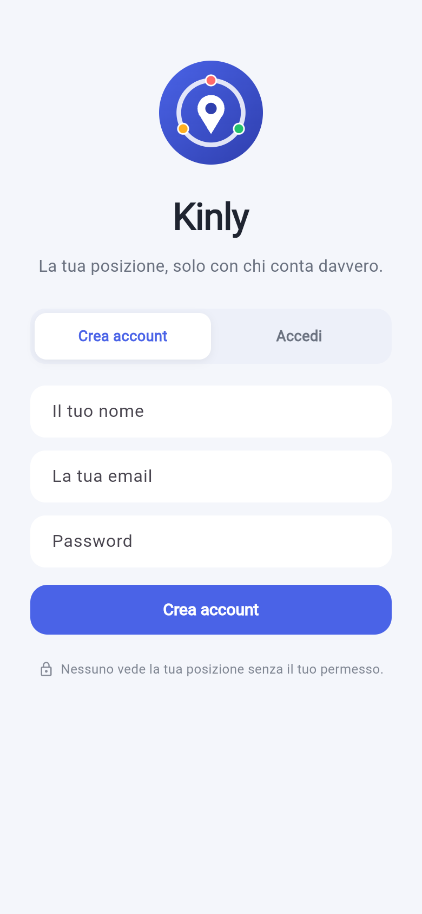

Kinly
Condividi la posizione con chi conta, solo su invito. Famiglia, amici e colleghi: sempre tranquilli, mai controllati.

Condividi la posizione con chi conta, solo su invito. Famiglia, amici e colleghi: sempre tranquilli, mai controllati.

La mappa live della tua cerchia
Stato e batteria di chi ami
Anteprima in stile Kinly, non uno screenshot: arrivera' con i primi utenti registrati.
Solo le persone che inviti tu nelle tue cerchie. Non esiste un elenco pubblico e nessuno puo' cercarti: l'accesso ai dati e' protetto da regole a livello di database (Row Level Security), non solo dall'interfaccia dell'app.
Si', in ogni momento. Puoi passare alla modalita' sfumata (mostra solo la zona, non l'indirizzo esatto) oppure impostare un orario di reperibilita' per non essere visibile fuori da certe ore.
E' disattivato di default. Puoi accenderlo (funzione Kinly+) solo se vuoi restare visibile anche ad app chiusa, e ricevi comunque un avviso quando la batteria del telefono si sta scaricando.
Avvisi subito le persone di fiducia che scegli tu, con la posizione esatta: non serve avvertire tutta la cerchia.
No. Il piano Free e' gratuito e include gia' cerchie, SOS, aree sicure e messaggi. Passi a Kinly+ solo se ti servono cronologia, cerchie illimitate o tracciamento in background.